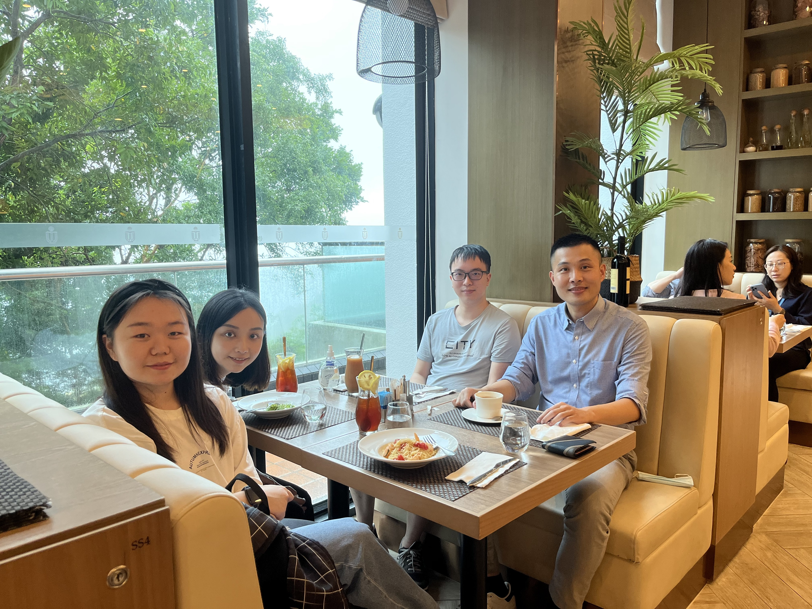
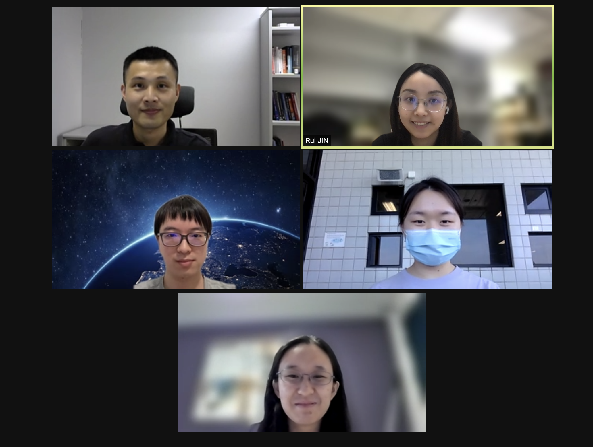
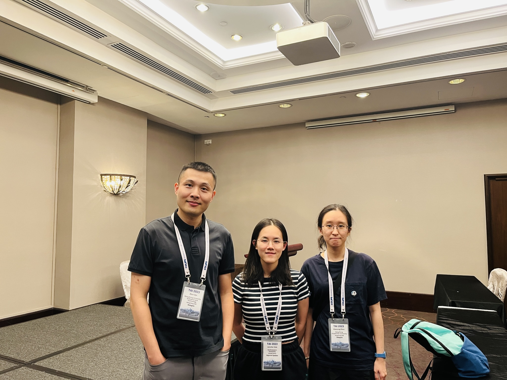
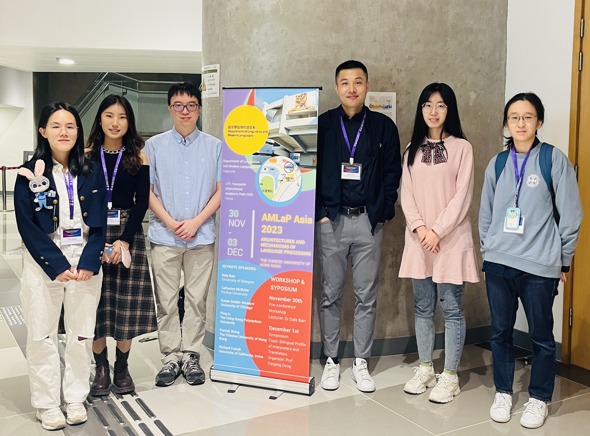

2022 Farewell Lunch

2022 Team meeting

ICPhS 2023 at Prague

2023 Gathering

TAI 2023 at Singapore

AMLaP Asia 2023 at CUHK

2024 Spring Gathering

186th Meeting of ASA in Canada 2024

2024 Yuqi's MPhil thesis defense